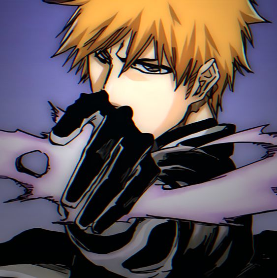

a Japanese anime television series based on Tite Kubo's original manga series of the same name. It was produced by Studio Pierrot and directed by Noriyuki Abe. The series aired on TV Tokyo from October 2004 to March 2012, spanning 366 episodes
Watch Now

Ichigo Kurosaki (黒崎 一護)
is a Human who is also a Substitute Shinigami. Ichigo is the son of Isshin and Masaki Kurosaki, and older brother of Karin and Yuzu. He is also married to Orihime Inoue and has a son named Kazui Kurosaki.